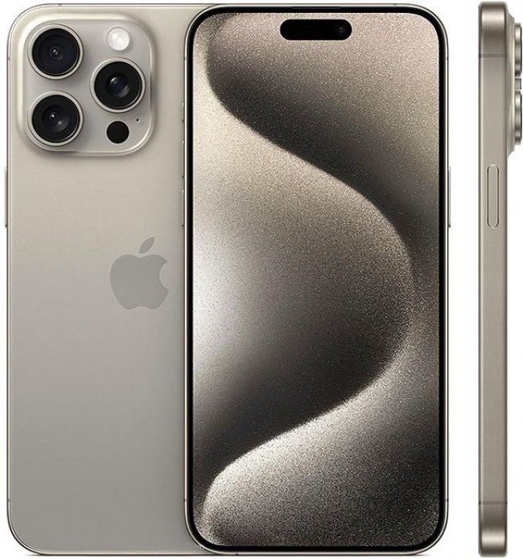

Дисплеят на iPhone 15 Pro Max e с 6.7 инча диагонал и LTPO Super Retina XDR OLED панел. Той е с динамична честота на опресняване, която стига до 120 херца, и поддържа както Dolby Vision, HDR10 и Always-On Display. Яркостта му достига 1000 нита, като в режим на висока яркост стига до 2000 нита. С резолюция от 1290x2796 пиксела дисплеят има пикселна гъстота 460ppi и е защитен от Ceramic Shield стъкло.
Отличителна черта на този модел е Dynamic Island в горната част на дисплея, където е Face ID и новата система за известия, базирана на комбинация от софтуер и хардуер. Най-мощният чип на Apple – A16 Bionic, задвижва този модел. Той е изработен по 4nm процес и има шест процесорни ядра, както и петядрен графичен процесор. Изборът на памет е 128GB, 256GB, 512GB или 1TB, като всички версии са с 6GB RAM. Капацитетът на батерията е 4323mAh и тя може да се зарежда бързо с кабел, както и безжично с MagSafe или Qi.
Apple iPhone 15 Pro Max разполага с Face ID, Wi-Fi 6, Bluetooth 5.3, NFC, Lightning порт, стерео високоговорители и UWB. Софтуерът е iOS 16, който вече има ъпдейти до по-нови версии.
Размерите му са 160.7 x 77.6 x 7.9 мм и тегло 240 гр. Наличните цветове са черен, сребрист, златен и тъмно лилав. Моделът е с рамка от неръждаема стомана и сертификат за за водо- и прахоустойчивост IP68.
 Apple Official Site =======Дисплеят на iPhone 15 Pro Max e с 6.7 инча диагонал и LTPO Super Retina XDR OLED панел. Той е с динамична честота на опресняване, която стига до 120 херца, и поддържа както Dolby Vision, HDR10 и Always-On Display. Яркостта му достига 1000 нита, като в режим на висока яркост стига до 2000 нита. С резолюция от 1290x2796 пиксела дисплеят има пикселна гъстота 460ppi и е защитен от Ceramic Shield стъкло.
Отличителна черта на този модел е Dynamic Island в горната част на дисплея, където е Face ID и новата система за известия, базирана на комбинация от софтуер и хардуер. Най-мощният чип на Apple – A16 Bionic, задвижва този модел. Той е изработен по 4nm процес и има шест процесорни ядра, както и петядрен графичен процесор. Изборът на памет е 128GB, 256GB, 512GB или 1TB, като всички версии са с 6GB RAM. Капацитетът на батерията е 4323mAh и тя може да се зарежда бързо с кабел, както и безжично с MagSafe или Qi.
Apple iPhone 15 Pro Max разполага с Face ID, Wi-Fi 6, Bluetooth 5.3, NFC, Lightning порт, стерео високоговорители и UWB. Софтуерът е iOS 16, който вече има ъпдейти до по-нови версии.
Размерите му са 160.7 x 77.6 x 7.9 мм и тегло 240 гр. Наличните цветове са черен, сребрист, златен и тъмно лилав. Моделът е с рамка от неръждаема стомана и сертификат за за водо- и прахоустойчивост IP68.
Apple Official Site >>>>>>> 0b3bfcb765ec24bccabdcb7d97f170003407c1ef